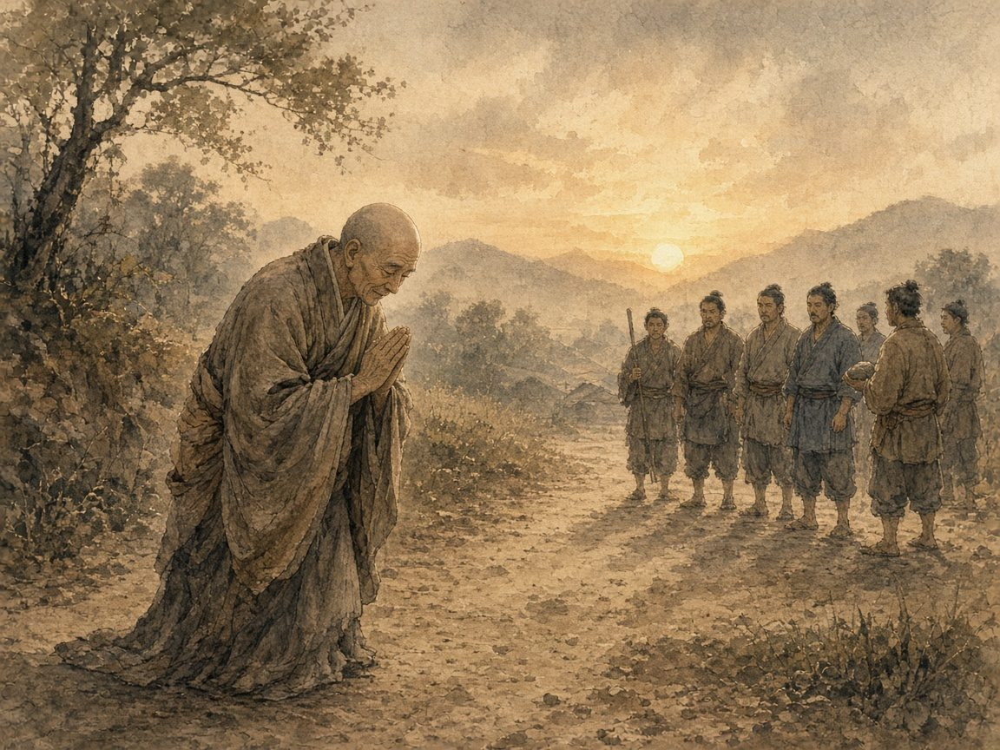

第1回常不軽菩薩（じょうふきょうぼさつ）
配信日
出典『妙法蓮華経』常不軽菩薩品第二十／日蓮聖人『崇峻天皇御書』

「我深く汝等を敬う。敢えて軽慢せず。所以は何ん、汝等皆菩薩の道を行じて、当に作仏することを得べし」 出典 『妙法蓮華経』常不軽菩薩品第二十、書き下し。いわゆる「二十四文字の法華経」
常不軽菩薩は、馬鹿にされても、杖で打たれたり石を投げられたりしても、少し離れたところからまた礼拝したといいます。相手の中にある仏性を決して軽んじなかったのです。
「教主釈尊の出世の本懐は人の振舞にて候けるぞ」 出典 日蓮聖人『崇峻天皇御書』
お題目の信心は口に唱えるだけで終わらず、人への接し方となって表れるものだという教えです。